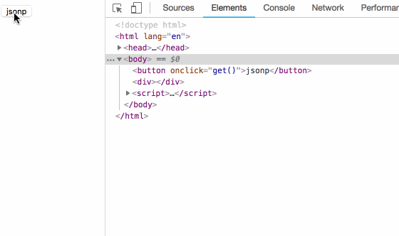

abstract
对于ajax等请求,浏览器有同源策略的限制,但是对于图片,scirpt等没有这个限制.利用这个特点, 把实际的请求放在一个script标签的src中,前端则需要事先定义这个回调函数,并且把回调函数的名字放在url中.; 服务端的api也需要有一点改动,不是直接返回数据,而是返回一个回调函数,包裹返回的数据.
过程演示:
服务端的api实现
为了演示跨域, 在本地启动一个服务端api, 在本地的3000端口.
1
2
3
4
5
6
7
8
9
10
11
12
13
14
15
16
17
| const express = require('express')
const app = express();
const port = 3000;
app.get("/jsonp/:id",(req,res)=>{
const callback = req.query.callback;
const id = req.params.id;
callback ? res.send(`${callback}(${id})`) : res.send(id);
})
app.listen(port, ()=>{
console.log('start at port:',port)
})
|
客户端
首先说明一下原理: 通过js构造一个script标签,把要请求的url放在script的src中.
构造页面,点击jsonp标签发起请求.
1
2
| <button onclick="get()">jsonp</button>
<div id='id' style="border:1px solid red"></div>
|
js代码
为了演示方便,定义一个id.
1
2
3
4
5
6
7
| function idPlus(){
var id = 0;
return function(){
return id++;
}
}
var id = idPlus();
|
创建一个函数,监听html中的事件.
1
2
3
4
5
6
7
| function get(){
jsonp('http://127.0.0.1:3000/jsonp/'+id(),
'callback',
function(value){
document.getElementsByTagName('div')[0].innerHTML = value;
})
}
|
这里就是实际封装的jsonp函数.
1
2
3
4
5
6
7
8
9
10
11
| var url = 'http://127.0.0.1:3000/jsonp/'+(id());
function jsonp(url, jsonpCallback, success){
url = ""+url+"?callback="+jsonpCallback;
var script = document.createElement('script');
script.src = url;
script.className="jsonp-script"
window[jsonpCallback] = function(data){
success && success(data)
}
document.body.appendChild(script);
}
|
可以看到此时可以正常访问.
当然这段代码还有一个缺点, 每次发起请求的script标签一直存在.可以再回调函数中将script标签删除:
1
| document.getElementsByClassName('jsonp-script')[0].parentElement.removeChild(document.getElementsByClassName('jsonp-script')[0])
|

总结
对于这些基础的概念, 虽然看文章可以看到,也知道大概的意思.但, 还是要经过代码的检验,才能彻底弄清楚.比如,一直知道前端组装一个script标签可以发起请求, 但是具体如何拿到数据,这个步骤一直没有弄清楚.所以, 纸上得来终觉浅,绝知此事要躬行.
另外,还有一些问题:
- 为什么获取script标签只能用get请求?
- 获取标签的get请求与ajax的get请求有什么不同?
- ajax与fetch有什么不同?
参考
- 主要代码来自这里: https://yuchengkai.cn/docs/zh/frontend/browser.html#jsonp
- 这篇文章解开了我如何获取数据的疑惑: https://www.cnblogs.com/chiangchou/p/jsonp.html
- 本文源码: https://github.com/tbswang/resources/tree/master/blog/jsonp